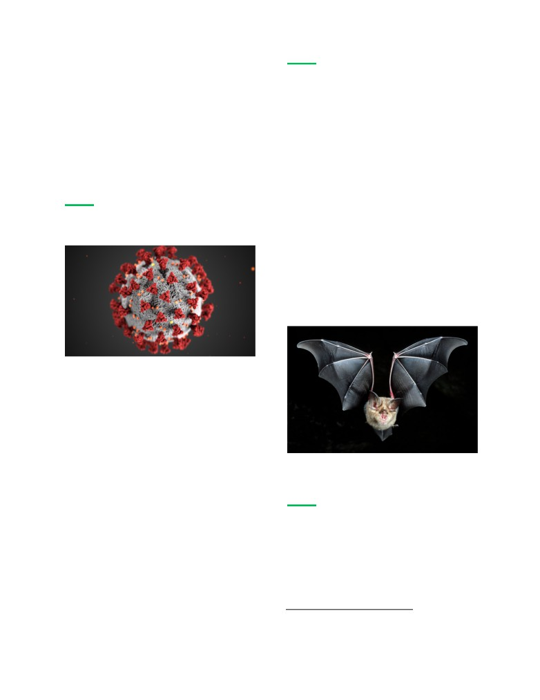
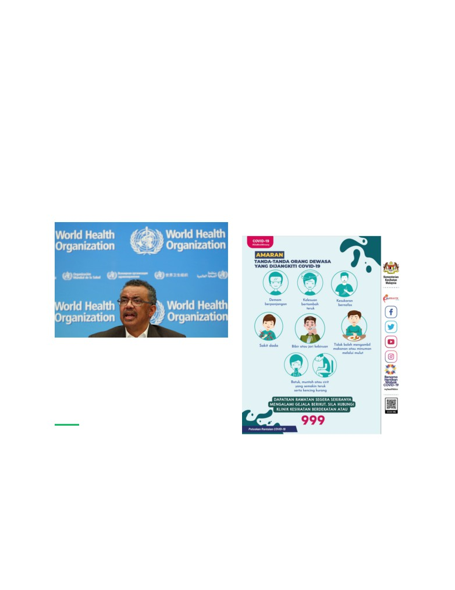
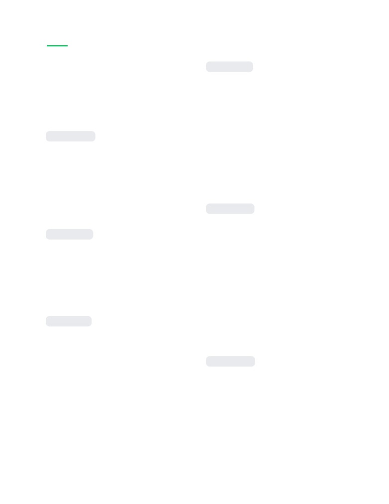
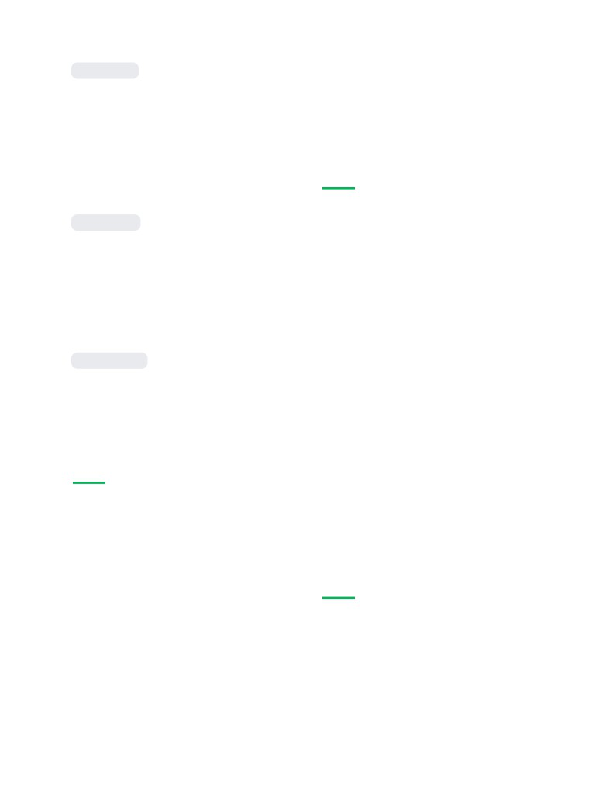
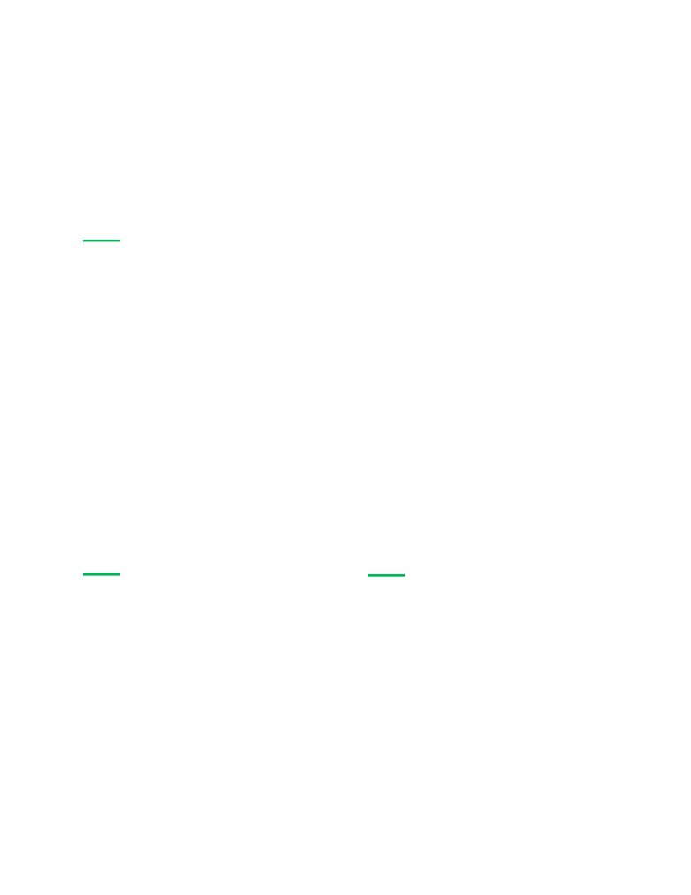
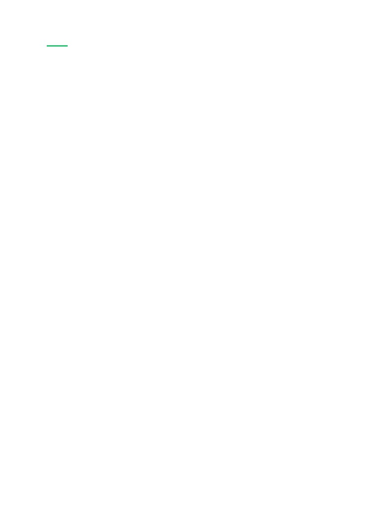

Latar
Kemungkinan Asal Usul
Oleh disebabkan kes-kes terawal
dilaporkan mempunyai perkaitan
Belakang
epidemiologi dengan pasar makanan
laut dan haiwan liar, virus ini dipercayai
mempunyai punca zoonosis1. Hal ini
Covid-19
disebabkan perbandingan urutan
genetik antara virus ini dengan sampel
virus SARS-CoV menunjukkan
Apakah itu Covid-19?
persamaan sebanyak 79.5% manakala
perbandingan dengan virus kelawar
menunjukkan persamaan sebanyak 96% .
Oleh itu, interaksi rapat manusia dengan
kelawar yang berlaku di pasar
dispekulasi sebagai punca utama.
Ilustrasi oleh CDC ini mendedahkan
morfologi ultrastruktur yang dipamerkan
oleh coronavirus. Sumber gambar: U.S. FDA
Koronavirus sindrom pernafasan akut
teruk 2 (SARS-CoV-2), juga dikenali
sebagai coronavirus baru 2019
Coronavirus telah dijumpai pada Horseshoe
(2019-nCoV), ialah sejenis virus
menunjukkan bukti penularan manusia
kepada manusia. Virus ini kali pertama
Pengisytiharan WHO
dikenal pasti oleh pihak berkuasa di
Wuhan , Hubei, China, dan ia merupakan
Pada 31 Januari 2020, Pertubuhan
penyebab wabak coronavirus 2019-21
Kesihatan Sedunia (WHO) telah
yang sedang berlaku.
mengisytiharkan coronavirus sebagai
1 Kenyataan ini belum disahkan oleh mana-mana
pihak.
1

perhatian kecemasan kesihatan awam
hingga empat belas hari selepas
peringkat antarabangsa (PHEIC) setelah
dijangkiti.
mendapati 98 kes di 18 negara di luar
negara China. 11 hari kemudian, iaitu
Lebih kurang satu per tiga orang yang
pada 11 Februari 2020, penyakit ini
dijangkiti tidak mengalami gejala yang
dinamakan sebagai Coronavirus Disease
ketara. Antara mereka yang menunjukan
19 (COVID 19) untuk mengelakkan panik
gejala yang cukup ketara untuk
yang tidak diperlukan. Covid 19
diklasifkasikan sebagai pesakit,
kemudian diumumkan sebagai sebuah
kebanyakan (81%) mengalami gejala
ringan hingga sederhana (seperti
WHO, Tedros Adhanom Ghebreyesus
pneumonia ringan), sementara 14%
setelah meneliti penyebaran yang
mengalami gejala yang teruk (seperti
semakin teruk.
hipoksia), dan 5% mengalami gejala
kritikal (kegagalan pernafasan).
Ketua Pengarah WHO, Tedros Adhanom
Ghebreyesus berkata, WHO bimbang virus
merebak ke negara yang tidak mempunyai
sumber untuk menanganinya. Sumber
Gejala dan Klasifkasi
Tanda-tanda orang dewasa yang dijangkiti
demam, batuk, sakit kepala, keletihan,
kesukaran bernafas, dan kehilangan bau
dan rasa. Gejala mungkin bermula satu
2

Kronologi
Mar 17, 2020
Kematian pertama akibat
Covid-19 Di
Covid-19
Malaysia
membabitkan seorang lelaki berusia 34
tahun yang pernah menghadiri
Jan 25, 2020
perhimpunan tabligh di Masjid Jamek
Kes pertama
Seri Petaling dan seorang paderi berusia
60 tahun dari Sarawak yang mempunyai
sejarah penyakit kronik.
masuk ke Malaysia melalui Johor dari
Singapura pada 23 Januari.
Mar 18, 2020
Pelaksanaan perintah kawalan
Jan 31, 2020
pergerakan (PKP) pertama
Darurat Kesihatan Dunia
Sebagai tindak balas terhadap lonjakan
kes pada bulan Mac 2020, Perdana
Pertubuhan Kesihatan Sedunia (WHO)
Menteri ke-8, Muhyiddin Yassin,
mengisytiharkan coronavirus sebagai
sehingga 31 Mac 2020. Tarikh tamat PKP
selepas itu dilanjutkan ke awal Mei
Feb 4, 2020
2020.
Kes pertama rakyat Malaysia
Gelombang kedua jangkitan berlaku
Mar 27, 2020
lelaki 41 tahun yang berasal dari
Pelaksanaan perintah kawalan
Selangor disahkan positif.
pergerakan diperketatkan (PKPD)
Lokasi-lokasi tertentu yang mempunyai
Kes pulih pertama
Seorang kanak-kanak perempuan warga
China di Langkawi yang sebelum ini
selama 14 hari.
positif coronavirus didapati pulih dan
bebas sepenuhnya daripada jangkitan.
3
May 4, 2020
Jan 12, 2021
Pelaksanaan perintah kawalan
Darurat di seluruh negara
pergerakan bersyarat (PKPB)
Darurat di seluruh negara diisytiharkan
oleh Yang di-Pertuan Agong,
Kerajaan mula melonggarkan Lockdown
menangguhkan sidang Parlimen dan
secara berfasa; bermula dengan PKPB
Dewan Undangan Negeri dan
(atau CMCO ). Kebanyakan sektor
perniagaan boleh dibuka semula di
memberikan kuasa darurat kerajaan
Muhyiddin sehingga 1 Ogos 2021.
bawah SOP yang ketat.
Feb 24, 2021
Jun 10, 2020
Kempen vaksinasi dilancarkan
Pelaksanaan perintah kawalan
pergerakan pemulihan (PKPP)
Perdana Menteri ke-8 Muhyiddin Yassin
menjadi orang pertama di Malaysia yang
Perdana menteri ke-8, Muhyiddin Yassin
menerima suntikan vaksin Covid-19 dan
mengumumkan bahawa perjalanan
seluruh negara.
kecuali untuk kawasan yang di bawah
PKPD (EMCO), dan menyatakan bahawa
negara sedang bergerak menuju ke fasa
Jun 1, 2021
pemulihan.
Pelaksanaan Total Lockdown di
seluruh negara (MCO 3.0)
Sep 20, 2020
Gelombang ketiga
dilaksanakan untuk semua sektor sosial
dan ekonomi. Hanya aktiviti sosial dan
Malaysia dilanda gelombang ketiga
ekonomi keperluan dibenarkan
pandemik Covid-19 disebabkan oleh
beroperasi.
bilangan kes Covid-19 mulai meningkat
kepada tiga angka.
Jul 13, 2021
Bilangan Kes Harian meningkat
4

Jul 21, 2021
Konsep video ini adalah berkaitan
dengan imbas kembali perkara yang
Kes varian Delta pertama
berlaku semasa covid-19 bermula, apa
pengorbanan frontliners dan
yang melibatkan pendatang tanpa izin
bagaimanakah kita boleh menunjukkan
Indonesia yang memasuki Sarawak pada
penghargaan kepada frontliners.
5 Julai.
Permulaan
Aug 9, 2021
Kadar vaksinasi (dos pertama) >
Bagi bahagian ini, penonton video akan
50%
ditanya soalan-soalan refeksi tentang
perasaan mereka apabila “terkurung” di
rumah disebabkan perintah kawalan
telah mendapat dos vaksin pertama.
pergerakan yang dilaksanakan oleh
kerajaan. Penonton akan ditunjuk
rakaman tentang aktiviti-aktiviti sosial
Aug 29, 2021
sebelum pandemik ini berlaku.
Kadar vaksinasi (dos pertama) >
Kami menjangka sesetengah penonton
60%
mungkin merungut bahawa SOP yang
ditetapkan oleh kerajaan amat leceh dan
telah mendapat dos vaksin pertama.
berasa kita tidak perlu mematuhinya.
Oleh itu, video ini disambungkan dengan
tinjuan pantas mengenai latar belakang
dan perkembangan pandemik Covid-19
di Malaysia sejak kes pertama untuk
Pelaksanaan
mengingatkan penonton-penonton ini
bahawa rakyat Malaysia belum menang
Perancangan
dalam “peperangan” ini.
Konsep video
Kandungan Utama
Video ini akan dibahagikan kepada 3
bahagian iaitu :
Bahagian ini akan memperkenalkan
● Bahagian permulaan
beberapa frontliners semasa mereka
● Kandungan utama
bertugas dan cabaran yang dihadapi
● Pengakhiran
oleh mereka. Selepas menonton
5

bahagian ini, penonton dijangka dapat
hadapan telah banyak memberi
memahami pengorbanan frontliners
sumbangan dalam perang melawan virus
terhadap masyarakat dan negara kita.
Covid-19.
Sebelum bahagian ini berakhir, video ini
mempersoalkan penonton : apakah yang
Video ini juga meningkatkan kesedaran
kita harus dilakukan untuk menunjukkan
orang ramai bahawa pandemik ini adalah
penghargaan terhadap jasa frontliners.
sesuatu perkara yang serius. Maka, kita
haruslah sentiasa mematuhi SOP yang
telah ditetapkan oleh kerajaan bagi
meringankan beban hero-hero. Tindakan
Pengakhiran
ini bukan sahaja dapat menyelamatkan
nyawa orang ramai malahan ia juga
Video ini juga ingin menyampaikan
merupakan tanda terima kasih kepada
mesej bahawa hero-hero frontliners ini
semua yang telah menyumbang dalam
terdiri daripada rakyat Malaysia yang
usaha memerangi virus ini.
berbilang kaum, dan mereka telah
berusaha untuk menyelamatkan nyawa
Sehubungan dengan itu, video ini harus
rakyat Malaysia tanpa mengira kaum,
ditonton oleh orang ramai kerana video
budaya dan agama. Sebagai tanda
ini menunjukan perpaduan antara
penghargaan kepada frontliners, ahli-ahli
hero-hero yang berbilang kaum. Kami
kumpulan akan mengucapkan terima
berharap video ini dapat merangsang
kasih di dalam video. Video ini diakhiri
semua rakyat Malaysia untuk
dengan ahli-ahli kumpulan memakai
menyingkirkan prasangka mereka
pelitup muka sebagai peringatan kepada
terhadap etnik lain dan saling
penonton untuk sentiasa mematuhi SOP.
menyayangi.
Mengapakah video ini
Di manakah video ini
harus ditonton oleh
akan dimuatnaik?
orang ramai?
Video ini akan dimuat naik ke Youtube
dan Instagram kerana kedua-dua
Video ini harus dilihat oleh orang ramai
platform ini mempunyai aliran penonton
kerana video ini dapat mengingatkan
dan pengguna yang banyak dan amat
kita bahawa banyak nyawa telah
popular di Malaysia.
terkorban dalam pandemik ini dan
hero-hero seperti petugas garisan
6

Siapakah target
penonton video ini?
Video ini sesuai untuk semua rakyat
Malaysia, termasuk kanak-kanak dan
warga emas, kerana mesej yang ingin
disampaikan dalam video ini penting
kepada semua rakyat Malaysia.
7